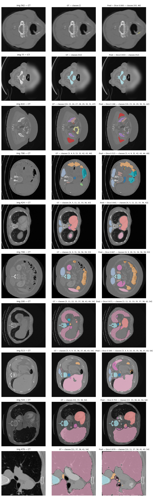
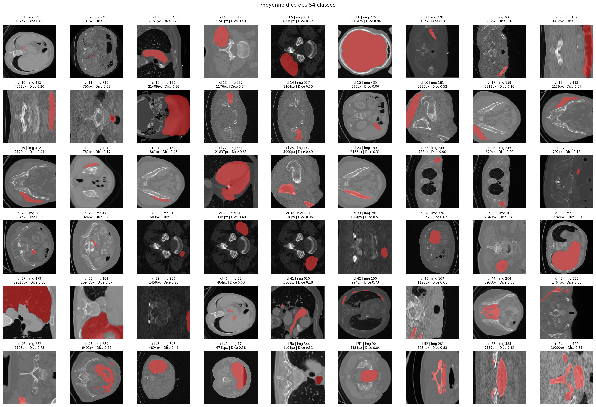

Segmentation abdominale CT — Challenge Raidium
Segmentation sémantique multi-organes à annotations partielles
Lien GitHub
Description
Challenge ENS Raidium : segmentation sémantique de coupes CT abdominales 256×256, à 55 classes (1 fond + 54 organes et structures anatomiques). La difficulté centrale n’est pas l’architecture mais la nature des annotations.
- 2000 images d’entraînement, dont seulement 800 annotées et 1200 sans rien.
- Annotations partielles : pour chaque image, seul un sous-ensemble de classes est certifié. Les autres ne sont ni positives ni négatives, elles doivent être ignorées dans la perte.
- ≈90 % des pixels appartiennent au fond et plusieurs classes n’apparaissent que dans dix images ou moins.
- 500 images de test évaluées par une Dice macro sur la plateforme.

Stratégie & Résultats
L’approche a consisté à empiler des techniques modestes mais bien ciblées, en diagnostiquant systématiquement avant d’agir. Score plateforme à chaque étape retenue :
| Étape | Méthode | Plateforme | Gain |
|---|---|---|---|
| Baseline | U-Net ResNet-18, entropie croisée | 0,022 | — |
| Loss masquée | + Dice composé + pondération classes | 0,169 | ×7,7 |
| Consolidation | + augmentations + Dice corrigé + 60 epochs | 0,270 | +0,101 |
| Semi-supervisé | + Mean Teacher (1200 non annotées) | 0,329 | +0,059 |
| Latent | + SupCon contrastive | 0,385 | +0,056 |
| Inférence | + TTA (augmentation au test) | 0,4005 | +0,016 |
| Ciblage | + pondération par classe | 0,4023 | +0,002 |
La loss masquée : en n’appliquant la perte qu’aux classes certifiées (logits des autres forcés à -\infty avant softmax), le score saute de 0,022 à 0,169.
Exploiter les 1200 images non annotées — Mean Teacher. Un schéma semi-supervisé (réseau élève + enseignant en moyenne mobile exponentielle, perte de cohérence sur les images sans label) porte le score à 0,329.
Diagnostiquer l’espace latent — SupCon. Une ACP de l’avant-dernière couche (score de silhouette ≈ 0,37) a montré que les classes ratées se concentraient au centre dense de la projection. Deux régularisations envisagées : SIGReg (issue du framework LeJEPA) et une perte contrastive supervisée (SupCon). Le diagnostic a fait pencher pour SupCon car plus directe pour écarter les amas. Score porté à 0,385. Un fait surprenant : la silhouette a baissé (0,37 → 0,25) pendant que le Dice montait, naïvemen je n’avaist pas prévu cette évolution entre les métriques.
Gain quasi gratuit — TTA. Prédiction de chaque image et de ses trois retournements, dé-augmentation exacte (involutive), moyennage des softmax : 0,4005 sans réentraînement.
Plafond - ≈ 0,67 en validation locale pour 0,40 plateforme. En fait la plateforme évalue un Dice macro global non masqué : chaque classe pèse identiquement (1/54 \approx 0,019), une classe à zéro coûte mécaniquement ce montant quelle que soit sa rareté. La métrique locale masquée surestimait d’un facteur ≈ 1,8 et j’optimisais en partie la mauvaise grandeur.
Piste tentée - L’étape suivante visait nnU-Net v2, référence de la segmentation médicale en préparation de DinoUNet (fondé sur DINOv3).
Lecture statistique par classe

Les chiffres extraits éclairent précisément le plafond :
- Dice moyen par classe ≈ 0,43 (médiane 0,47, écart-type 0,28) — très proche du score plateforme, cohérent avec un macro-average par classe.
- 6 classes à Dice exactement nul (cl 1, 2, 15, 25, 26, 40) et 9 autres sous 0,10. Ces 15 classes retranchent à elles seules 0,15 à 0,20 au macro-average.
- 11 classes excellentes (Dice ≥ 0,70), jusqu’à 0,96 pour la mieux segmentée.
- Corrélation taille/Dice de Pearson ≈ 0,64. Les 5 plus grosses structures atteignent un Dice moyen de 0,85, les 5 plus petites seulement 0,11.
Echecs
Exploiter un Vision Transformer auto-supervisé sur 142 M d’images semblait prometteur. Résultat : plafond à ≈ 0,40 en validation locale, contre 0,67 pour le pipeline ResNet-18 sur la même validation. Trois causes probables :
- Décalage de domaine majeur : DINOv2 est entraîné sur des photos naturelles, sans rapport avec les coupes scanner en niveaux de gris.
- Backbone gelé : 21 M de paramètres non adaptables donc le décodeur seul ne peut pas combler l’écart.
- Résolution grossière (grille 18×18 patches) inadaptée aux contours fins d’organes et absence du biais inductif local des convolutions.
Encodeur hybride convolution-transformer, multi-échelle, cette fois dégelé. Plafond à ≈ 0,495 local, encore loin des 0,672 du ResNet-18. Les Transformers sont plus dépendants du volume de pré-entraînement que les CNN et le décalage ImageNet → CT médical n’est pas rattrapable sur seulement 800 images. La capacité supplémentaire (≈ 30 M de paramètres) s’est retournée en désavantage faute de données.
Sur une RTX 3050 6 Go. La préparation a réussi (conversion, manifeste, split imposé comme premier fold), mais l’entraînement me prenait près d’1 heure par epoch. nnU-Net auto-configure son budget mémoire au-delà de 6 Go. DinoUNet repose sur la même infrastructure.
Remarques
Le point le plus important : les classes à très faible présence sont restées à Dice nul malgré une pondération forte. La pondération inversement proportionnelle au Dice par classe a bien amélioré 9 des 12 classes ciblées (l’une est passée de 0,30 à 0,56), mais le gain plateforme global est resté faible (+0,0018) — sur 54 classes, chaque amélioration ne pèse que 1,85 %, et on ne peut pas créer un signal qui n’existe pas avec quelques images d’entraînement seulement.